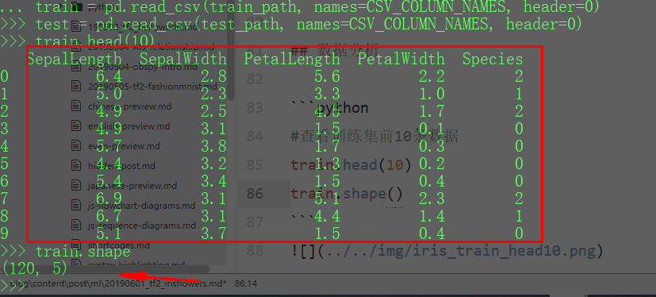
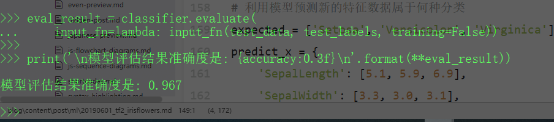

Iris flower 数据集
Iris flower data set，是植物学家整理的鸢尾花数据集。Iris flower，中文翻译为鸢尾花，有三种类型，分别是：setosa, versicolor, virginica. 植物学家选择了这些花的四个特征分别进行记录, sepal_width,sepal_length, petal_width, petal_length，即花萼宽度、花萼长度、花瓣宽度、花瓣长度。这四种特征就可以描述不同类别的鸢尾花。
数据集来源
训练数据下载
测试数据下载
通过研究数据集和已有特征，使用tensorflow的预定义Estimator模型，实现鸢尾花分类。
数据处理
特征数据与标签
由于数据集师电子表格数据，为了便于理解，给数据集加上列名。
1
2
3
4
|
#电子表格列名
CSV_COLUMN_NAMES = ['SepalLength', 'SepalWidth', 'PetalLength', 'PetalWidth', 'Species']
#鸢尾花种类，即label
SPECIES = ['Setosa', 'Versicolor', 'Virginica']
|
1
2
3
4
5
6
7
8
9
10
11
12
13
14
15
|
from __future__ import absolute_import, division, print_function, unicode_literals
import tensorflow as tf
# pandas 可以直接处理电子表格中的数据
import pandas as pd
#确认tensorflow版本，不是2.0，请使用`pip install tensorflow==2.0.0-alpha0安装`
print(tf.__version__)
#下载数据
train_path = tf.keras.utils.get_file(
"iris_training.csv", "https://storage.googleapis.com/download.tensorflow.org/data/iris_training.csv")
test_path = tf.keras.utils.get_file(
"iris_test.csv", "https://storage.googleapis.com/download.tensorflow.org/data/iris_test.csv")
#数据直接读入训练集train和测试集test
train = pd.read_csv(train_path, names=CSV_COLUMN_NAMES, header=0)
test = pd.read_csv(test_path, names=CSV_COLUMN_NAMES, header=0)
|
数据分析
1
2
3
|
#查看训练集前10条数据
train.head(10)
train.shape
|
通过查看可以得出，train有120数据，test有30条数据，都是5列，其中第五列是label

整理训练数据
为了使用Tensorflow中定义好的Estimator，而不用自己去实现模型定义、数据训练、模型评估，需要对现有数据集进行整理，将特征（feature）和标签（label）分离，形成喂入Estimator的数据流输入函数。
1
2
3
4
5
6
7
8
9
10
11
12
|
#特征数据与标签的分离
train_data, train_labels = train, train.pop('Species')
test_data, test_labels = test, test.pop('Species')
#定义数据流输入函数
def input_fn(feature, labels, training=True, bacth_size=256):
#将特征数据和标签转换成Dataset类型的
dataset = tf.data.Dataset.from_tensor_slices((dict(feature),labels))
#如若在训练模式中，需要多次重复
if training:
dataset = dataset.shuffle(1000).repeat()
return dataset.batch(batch_size)
|
定义特征列，其目的告诉模型那些数据列是特征数据。特征列作为原始数据和模型之间的桥梁，它使得各种原始数据转换为模型可以使用的格式，从而轻松的进行实验。
1
2
3
|
my_feature_columns = []
for key in train.keys():
my_feature_columns.append(tf.feature_column.numeric_column(key=key))
|
内置估算模型的实例化
在 Tensorflow2.0中对于常见的分类问题已经定义了（内置）了许多模型，如：
tf.estimator.DNNClassifier 多分类问题tf.estimator.DNNLinearCombinedClassifier 大型分类问题tf.estimator.LinearClassifier 基于线性的分类问题
本数据集Iris flower分类问题使用内置tf.estimator.DNNClassifier Estimator即可。
使用以下代码初始化内置模型
1
2
3
4
5
6
|
classifier = tf.estimator.DNNClassifier(
feature_columns=my_feature_columns,
#两个隐藏层，分别具有30个和10个节点.
hidden_units=[30, 10],
#模型具有三个类别.
n_classes=3)
|
训练、评估、预测
在上面的处理中，已经完成了模型训练前的准备工作，接下里可以进行模型训练、评估和预测。
训练
利用tf.estimator.DNNClassifier已经实例化的classifier，调用方法train方法。
1
2
3
4
|
#模型训练.
classifier.train(
input_fn=lambda: input_fn(train_data, train_labels, training=True),
steps=5000)
|
评估
1
2
3
4
|
eval_result = classifier.evaluate(
input_fn=lambda: input_fn(test_data, test_labels, training=False))
print('\n模型评估结果准确度是: {accuracy:0.3f}\n'.format(**eval_result))
|

预测
1
2
3
4
5
6
7
8
9
10
11
12
13
14
|
# 利用模型预测新的特征数据属于何种分类
expected = ['Setosa', 'Versicolor', 'Virginica']
predict_x = {
'SepalLength': [5.1, 5.9, 6.9],
'SepalWidth': [3.3, 3.0, 3.1],
'PetalLength': [1.7, 4.2, 5.4],
'PetalWidth': [0.5, 1.5, 2.1],
}
def input_fn(features, batch_size=256):
return tf.data.Dataset.from_tensor_slices(dict(features)).batch(batch_size)
#调用训练好的模（分类器），并将特征数据喂给模型以供预测
predictions = classifier.predict(
input_fn=lambda: input_fn(predict_x))
|
查看预测结果
由于predictions返回的是python形式的迭代数据，因此需要利用循环来输出预测结果
1
2
3
4
5
6
|
for pred_dict, expec in zip(predictions, expected):
class_id = pred_dict['class_ids'][0]
probability = pred_dict['probabilities'][class_id]
print('Prediction is "{}" ({:.1f}%), expected "{}"'.format(
SPECIES[class_id], 100 * probability, expec))
|
结果是：
Prediction is “Setosa” (99.9%), expected “Setosa”
Prediction is “Versicolor” (100.0%), expected “Versicolor”
Prediction is “Virginica” (100.0%), expected “Virginica”